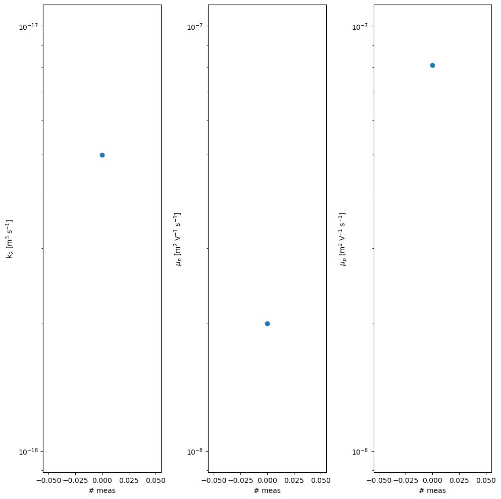
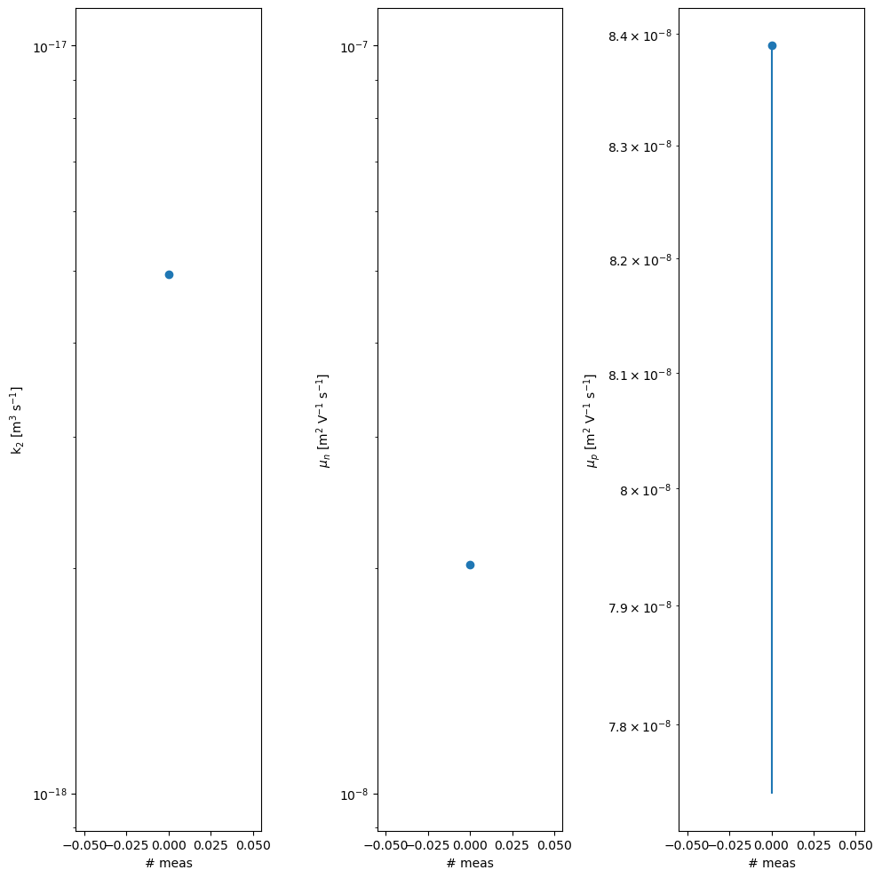
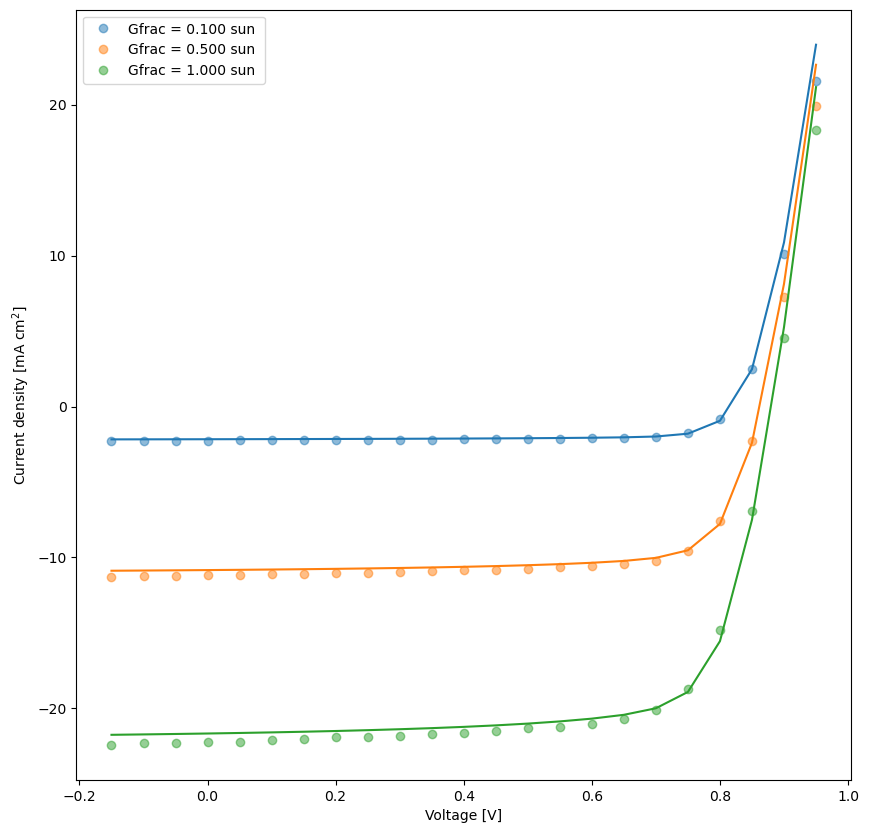
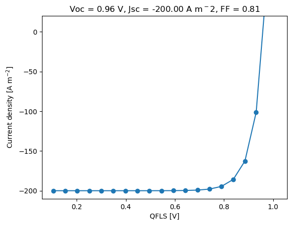
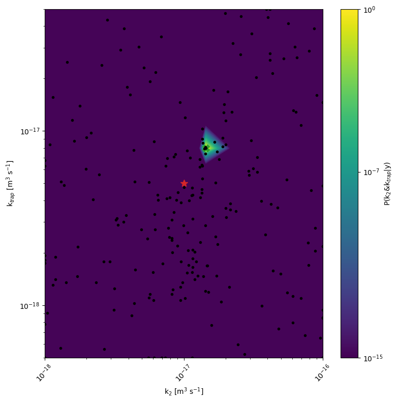
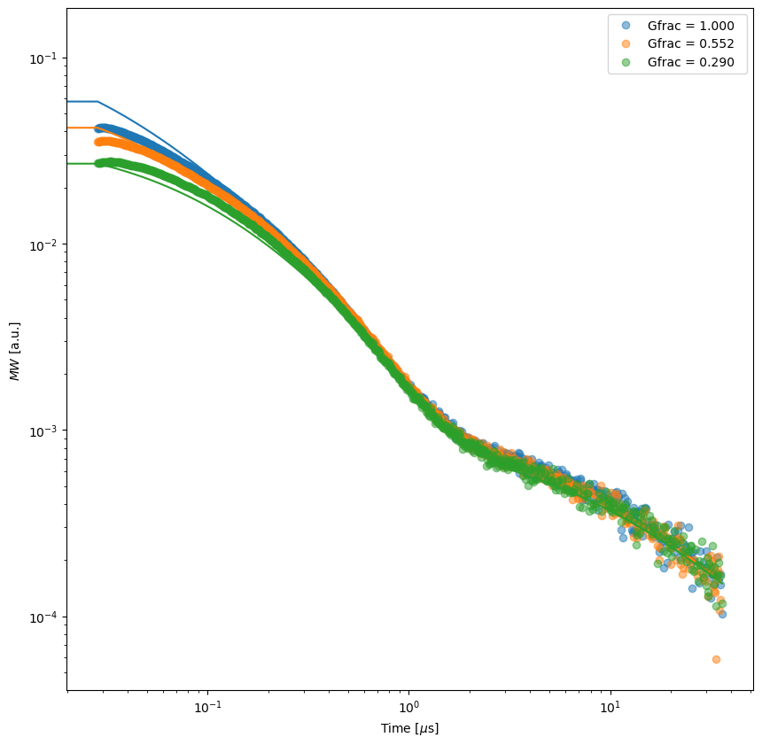

boar
Getting started:
Installation
Additional necessary installs for the agents
Disclaimer
Scientific publications based on the BOAR project
Change Log
Model fitting examples:
BOAR with SIMsalabim
BOAR with SIMsalabim Organic Photovoltaic (OPV) example
BOAR for TAS fitting
Multi-Objective Fitting of TrPL and TrMC Data
Notebooks gallery
BOAR with SIMsalabim
BOAR with SIMsalabim
BOAR with SIMsalabim Organic Photovoltaic (OPV) example
BOAR for TAS fitting
BOAR for TrPL fitting
Multi-Objective Fitting of TrPL and TrMC Data
Optimization and DoE examples:
Design of Experiments to optimize perovskite solar cells efficiency
Multi-objective optimization for perovskite material composition
Custom evaluate function for Multi-Objective Optimization - Transfer Matrix example
Notebooks gallery
BOAR API:
boar
boar
Notebooks gallery
Edit on GitHub
Notebooks gallery

BOAR with SIMsalabim

BOAR with SIMsalabim

BOAR with SIMsalabim Organic Photovoltaic (OPV) example

BOAR for TAS fitting

BOAR for TrPL fitting

Multi-Objective Fitting of TrPL and TrMC Data